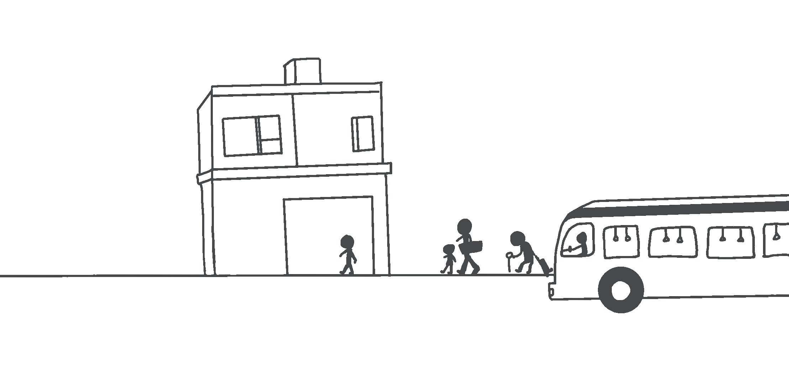

Logo for the thesis project. Designed and made with Procreate.
The "hidden" Chinese seafood market is an ordinary two-story white house on Mission Street in San Francisco near Daly City. The pale building has no shop signs or entrance instructions, and most of the week the overhead front door does not roll up.
So I animated the scene of customers getting into the seafood market.